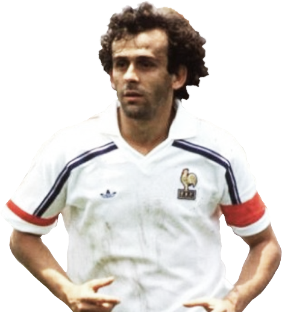

Platini
Michel François Platini é o ex-presidente da UEFA e antigo jogador de futebol francês de origem italiana que atuava como meio-campista, tendo carreira de destaque enquanto jogador durante os anos 1980, principalmente na Juventus e na seleção francesa, onde ganhou a Eurocopa de 1984.